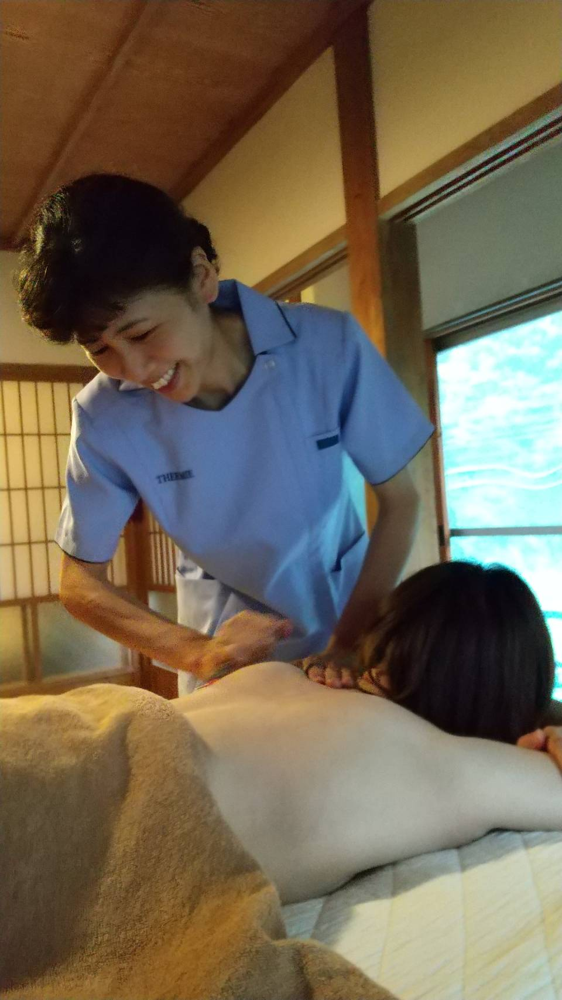

療術師プロフィール
福岡 しのぶ
- 1973年｜広島県広島市に生まれる
- 1994年｜臨床検査技師国家資格取得
- 2007年｜聖イトオテルミー学院療術師
- 2019年｜聖イトオテルミー学院学院生教育者
- 2020年｜聖イトオテルミー学院講師
わたしとテルミー
幼い頃から入退院を繰り返していた母の影響で 医療職に興味を持ち、25年程前に臨床検査技師の 資格を取り病院へ就職しました。
病気や怪我で医療を必要としている人の役に立てるようにと 希望を持って病院に就職したものの現場で仕事をしていくうちに 疑問を感じてきました。 それは、西洋医学は救急的なものには大変有用ですが、 慢性的な疾病などは対症療法ばかりで根本的には治らないものが 多いということです。
その後結婚を機に病院を退職し、出産を経て、テルミーと出会いました。 子どもを育てていくなかで自然治癒力の促進を促すテルミー療法に興味を持ち、 実際体験すると、穏やかな温熱刺激がからだに入り、次の日にはからだかすっきりと軽い。 これはいい！とすぐに近くの支部を探して会員になりました。 会員になり、しばらくすると子どもがアトピー性皮膚炎で痒くて 夜も眠れないという状態になりましたがテルミーに随分助けられました。
熱いと感じるくらいの温度の冷温器、 もしくスコープをあてると痒みが少し落ち着くようで3ヶ月くらいは 冷温器とスコープが手離せない日が続きましたが少しずつ少しずつ良くなっていきました。
この経験を元に、テルミーをもっと勉強したいと思うようになり療術師の勉強をはじめました。
そして2007年にイトオテルミー療術師資格を取得。 その翌年に、もっと自然豊かなところで暮らしたいという思いが 実現する出会いがあり、今の住居に引っ越しました。
自然豊かなところで暮らしていると、五感が研ぎ澄まされてくるように感じ、 このこともテルミーを施術するのに役立っているように思っています。
1人でも多くの方にテルミーの温熱刺激を届けて、 こころとからだが元気になるお手伝いがしたいと思っています。